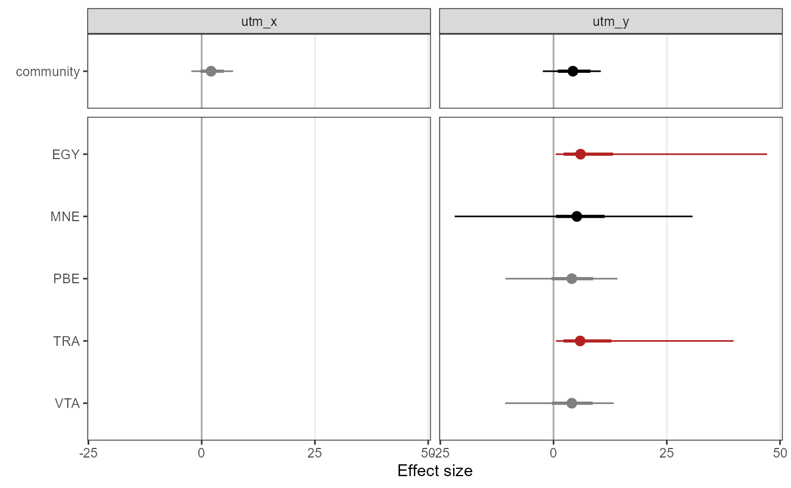

5. Multi-species occupancy models
Juergen Niedballa (camtrapr@gmail.com)
2022-01-13
Source:vignettes/camtrapr5.Rmd
camtrapr5.Rmd## Warning: package 'DT' was built under R version 4.1.2Overview
Multi-species occupancy models are a powerful group of models that combine information from many species to estimate individual species’ responses as well as community-level responses to environmental variables.
They are normally fit in Bayesian frameworks, e.g. BUGS, JAGS or Nimble. Creating the necessary input for these models from camera trapping data, writing the model code, setting parameters to monitor, initial values etc. can however be daunting, and even for seasoned users can be a tedious and time-consuming task.
A new extension of camtrapR aims to simplify this process by automatically and flexibly creating custom community occupancy models that are ready for analysis in JAGS or Nimble. The workflow supports:
- continuous and categorical site covariates on detection and occupancy probability
- continuous and categorical observation-level covariates on detection probability
- fixed and random effects of all these covariates
- independent effects of continuous site covariates between the different species
- nested random effects
- fixed, independent or random intercepts of detection and occupancy probability
- data augmentation (fully open community or known maximum species richness)
- species richness estimates
- models in JAGS and Nimble
- derived quantities, e.g. Bayesian p-values (overall and by species) and species richness estimates
The main function is communityModel(). It automates:
- writing model code
- setting parameters to monitor
- setting initial values
- bundling input data
The output is a commOccu object. The workflow then provides methods for:
- fitting models
- plotting marginal effects (response curves)
- plotting effect sizes
- spatial predictions of species occupancy probabilities
- spatial predictions of species richness
The output of fit() is an mcmc.list from the coda package and can be uses as such, so the summary(), plot(), etc. methods are available as well as the functions from bayesplot.
The main function communityModel does not support R formula syntax the way packages like unmarked or ubms do Instead, covariates and their effect types are specified via a few dedicated function arguments. This non-standard approach may change in the future to instead support formula syntax. On the other hand it might be less confusing than the lme4 syntax for random effects.
Warning
A word of caution, please always check the model code and make sure you understand the code and agree with it. The workflow is meant to be convenient and does not require you to even look at the model code, but you should (there are many comments in the model code to make it easier). This workflow still requires a proper understanding of Bayesian modelling frameworks and the concepts behind multi-species occupancy models.
Limitations
The workflow is still rather experimental, so please remain critical of the results and check carefully. If you encounter any problems, please let me know.
There are currently a few limitations in the workflow:
- priors can not be customized
- models with categorical observation-level covariates cannot be compiled in Nimble and must be fit in JAGS instead
- nested random effects and random effects of site covariates are still experimental, and the plot_* methods don’t work on these yet
- likewise, the output of
predictmay not be correct for these - input checks are a bit limited and may not always lead to meaningful error messages. This will improve over time with user feedback.
- Nimble does not yet seem to have an advantage in processing speed. That might require further customization
- independent effects are only supported in continuous site covariates
Over time these will likely be worked on.
Parameter naming convention
The parameter names are assembled from standardized building blocks. The nomenclature is as follows:
| Name | Refers to | Description |
|---|---|---|
| alpha | Submodel | detection submodel |
| beta | Submodel | occupancy submodel |
| 0 | Intercept | denotes the intercepts (alpha0, beta0) |
| fixed | Effect type | fixed effects (constant across species) |
| indep | Effect type | independent effects (separate for each species) |
| ranef | Effect type | random effects (of species and/or other categorical covariates) |
| cont | Covariate type | continuous covariates |
| categ | Covariate type | categorical covariates |
| mean | Hyperparameter | mean of random effect |
| sigma | Hyperparameter | standard deviation of random effect |
| tau | Hyperparameter | precision of random effect (used internally, not returned) |
For example, a fixed intercept of occupancy (constant across species) is beta0, and a fixed intercept of detection probability is alpha0.
An occupancy probability intercept with a random effect of species is:
beta0.mean community mean of the occupancy probability intercept
beta0.sigma standard deviation of the community occupancy probability intercept.
beta0[1] occupancy probability intercept of species 1 (likewise for other species).
For effects of site covariates, the pattern is:
submodel.effectType.covariateType.CovariateName.hyperparameter
For example:
beta.ranef.cont.habitat.mean is the mean community effect of the continuous site covariate ‘habitat’ on occupancy probability.
beta.ranef.cont.habitat[1] is the effect of continuous site covariate ‘habitat’ on occupancy probability of species 1.
Site-occasion covariates are denoted by .obs after the submodel, e.g.:
alpha.obs.fixed.cont.effort is the fixed effect of the continuous observation-level covariate ‘effort’ on detection probability
Quick example
Here is a quick example using the sample data that are included in camtrapR. The data set only contains five species at three fictional camera trap stations, and use made-up covariates (so the parameter estimates will be nonsense, ecologically). It is only a technical demonstration for how community models fit into the camtrapR workflow.
Data preparation
First load the camera trap table and create a camera operation matrix:
data("camtraps")
camop_no_problem <- cameraOperation(CTtable = camtraps,
stationCol = "Station",
setupCol = "Setup_date",
retrievalCol = "Retrieval_date",
hasProblems = FALSE,
dateFormat = "dmy"
)Now we load the record table and create a list of detection histories. Here we include all species, but you may want to subset the record table first. Note the argument includeEffort = TRUE, hence the output for each species will be a list (containing the detection history and effort matrix).
data("recordTableSample")
# list of detection histories
DetHist_list <- lapply(unique(recordTableSample$Species), FUN = function(x) {
detectionHistory(
recordTable = recordTableSample,
camOp = camop_no_problem,
stationCol = "Station",
speciesCol = "Species",
recordDateTimeCol = "DateTimeOriginal",
species = x, # this gets modifies by lapply
occasionLength = 7,
day1 = "station",
datesAsOccasionNames = FALSE,
includeEffort = TRUE,
scaleEffort = TRUE,
timeZone = "Asia/Kuala_Lumpur"
)}
)
# assign species names to the list items
names(DetHist_list) <- unique(recordTableSample$Species)
# note, DetHist_list is a list containing a list for each speciesGet the detection history of each species and put into a new list (get rid of effort matrix).
ylist <- lapply(DetHist_list, FUN = function(x) x$detection_history)Create some fake covariates (only for demonstration):
sitecovs <- camtraps[, c(1:3)]
sitecovs$elevation <- c(300, 500, 600)
sitecovs[, c(2:4)] <- scale(sitecovs[,-1]) # scale numeric covariates
sitecovs$fact <- factor(c("A", "A", "B")) # categorical covariateNow we bundle the necessary data for communityModel in a list with 3 items:
- ylist: the list of detection histories
- siteCovs: data frame with site covariates
- obsCovs: (named) list with observation level covariates. Requires at least the effort matrix.
data_list <- list(ylist = ylist,
siteCovs = sitecovs,
obsCovs = list(effort = DetHist_list[[1]]$effort)) # is identical for all speciesNow data_list is a list containing the detection histories, site covariates and occasion level covariates.
N.B.: It is always necessary to provide an effort matrix. This is to ensure that detection probability is 0 when there was no effort. This is achieved by creating a binary effort matrix based on the user-provided effort matrix. The binary effort matrix is 0 for all cells where effort = NA, and 1 for all cells with values (no matter what values). Thus, all occasions with effort = NA in the povided above effort matrix will have detection probability = 0.
Also note that this does not automatically include effort as a covariate on detection probability. To include effort as a covariate on detection probability, include “effort” in argument detCovsObservation (you can specify a fixed or random effect).
Fit model in JAGS
Now the interesting part. The function communityModel() creates a new class, “commOccu”. It is an object that contains all relevant information for running a community occupancy model. Here we will create a JAGS model (the default). For a model in Nimble, see further below.
# text file to save the model
modelfile1 <- tempfile(fileext = ".txt")
mod.jags <- communityModel(data_list,
occuCovs = list(fixed = "utm_y", ranef = "elevation"),
detCovsObservation = list(fixed = "effort"),
intercepts = list(det = "ranef", occu = "ranef"),
modelFile = modelfile1)## Wrote model to C:\Users\NIEDBA~1\AppData\Local\Temp\RtmpsrmTMl\filea7821fd7b24.txtThis call defined a model with a fixed effect of utm_y on occupancy probability of all species, and a species-specific (random) effect of elevation on occupancy probability. Furthermore, we specified effort as a covariate on detection probability (constant across species), and there are random effects of species on the intercepts of detection and occupancy probabilities.
Note that throughout this vignette we use a temporary file to save the model text. In real examples you’d probably want to use a persistent file.
One can also see the model code using (not shown here for brevity):
There is a very basic summary method for commOccu objects:
summary(mod.jags)## commOccu object (for JAGS)
##
## 5 species, 3 stations, 7 occasions
## 21 occasions with effort
## Number of detections (by species): 2 - 11
##
## Available site covariates:
## Station, utm_y, utm_x, elevation, fact
##
## Used site covariates:
## utm_y, elevation
##
## Available site-occasion covariates:
## effortThe model is fit with fit().
fit.jags <- fit(mod.jags,
n.iter = 1000,
n.burnin = 500,
chains = 3)## snowfall 1.84-6.1 initialized: sequential execution, one CPU.## Warning: package 'rjags' was built under R version 4.1.2## Loading required package: coda## Warning: package 'coda' was built under R version 4.1.2## Linked to JAGS 4.3.0## Loaded modules: basemod,bugs## sfExportAll() ignored in sequential mode.## Warning in snowfall::sfClusterSetupRNG(): Uniform random number streams
## (currently) not available in serial execution. Random numbers may differ in
## serial & parallel execution.The output of the fit() method is anmcmc.list from the coda package.
Summarize posterior estimates:
fit_summary <- summary(fit.jags)Statistics of parameter estimates:
# Note, colors may not render correctly in dark themes in RStudio.
DT::datatable(round(fit_summary$statistics, 3))Quantiles of parameter estimates:
Marginal effect plots (response curves) can be plotted with plot_effects(). Argument submodel defines whether the output is for the detection or occupancy part of the model:
plot_effects(mod.jags,
fit.jags,
submodel = "state")## $utm_y
##
## $elevation
plot_effects(mod.jags,
fit.jags,
submodel = "det")## $effort
Likewise, we can plot effect sizes for easier comparison between species and for easily checking significance with plot_coef():
plot_coef(mod.jags,
fit.jags,
submodel = "state",
combine = T)## 'combine' and 'ordered' can't both be TRUE. Setting 'ordered = FALSE'
plot_coef(mod.jags,
fit.jags,
submodel = "det")## $effort
There are further arguments for the significance levels, sorting species by parameter estimates, and for combining multiple plots.
Models in Nimble
Introduction
NIMBLE is a system for building and sharing analysis methods for statistical models, especially for hierarchical models and computationally-intensive methods. NIMBLE is built in R but compiles your models and algorithms using C++ for speed.
It allows you to run the same models as BUGS or JAGS, but can be much faster in some situations.
Using Nimble for community occupancy models requires the packages “nimble” and “nimbleEcology”:
## Warning: package 'nimble' was built under R version 4.1.2## Warning: package 'nimbleEcology' was built under R version 4.1.2Compilation and Rtools
Using nimble only makes sense if one can compile the models (which runs them as fast C++ code). Compiling Nimble code requires Rtools.
You can obtain Rtools from: https://cran.r-project.org/bin/windows/Rtools/.
It then needs to be put in PATH, see here for how to do it: https://cran.r-project.org/bin/windows/Rtools/#putting-rtools-on-the-path.
Depending on where you installed Rtools, you should see something like “C:/rtools40/usr/bin” somewhere in the output of the following line (for me it’s usually the first or second entry).
Sys.getenv("PATH") Fit models in Nimble
We can fit the same model in Nimble using the exact same functions as for the JAGS model above. Only set nimble = TRUE.
modelfile2 <- tempfile(fileext = ".txt")
mod.nimble <- communityModel(data_list,
occuCovs = list(fixed = "utm_x", ranef = "utm_y"),
detCovsObservation = list(fixed = "effort"),
intercepts = list(det = "ranef", occu = "ranef"),
modelFile = modelfile2,
nimble = TRUE) # set nimble = TRUE## Wrote model to C:\Users\NIEDBA~1\AppData\Local\Temp\RtmpsrmTMl\filea789437416.txtIt is possible to fit uncompiled models, but it is usually extremely slow and should only be done for checking model structure and expected outputs, using very few iterations.
fit.nimble.uncomp <- fit(mod.nimble,
n.iter = 10,
chains = 1)## Warning in checkForDeterministicDorR(code[[i]]): Model includes deterministic
## assignment using '<-' of the result of a density ('d') or simulation ('r')
## calculation. This is likely not what you intended in: new.y[i, j, 1:maxocc] <-
## rOcc_v(n = 1, probOcc = psi[i, j], probDetect = p.eff[i, j, 1:maxocc], len =
## maxocc).
# the notes and the error message above are harmlessTo fit a compiled model, set compile = TRUE:
fit.nimble.comp <- fit(mod.nimble,
n.iter = 10000,
n.burnin = 5000,
chains = 3,
compile = TRUE,
)## Warning in checkForDeterministicDorR(code[[i]]): Model includes deterministic
## assignment using '<-' of the result of a density ('d') or simulation ('r')
## calculation. This is likely not what you intended in: new.y[i, j, 1:maxocc] <-
## rOcc_v(n = 1, probOcc = psi[i, j], probDetect = p.eff[i, j, 1:maxocc], len =
## maxocc).The output as an mcmc.list, just like for the JAGS model above, and can be treated just the same:
# parameter summary statistics (not shown)
summary(fit.nimble.comp)Response curves (= marginal effect plots)
plot_effects(mod.nimble,
fit.nimble.comp,
submodel = "state")## $utm_x
##
## $utm_y
plot_effects(mod.nimble,
fit.nimble.comp,
submodel = "det")## $effort
Effect size plots:
plot_coef(mod.nimble,
fit.nimble.comp,
submodel = "state",
combine = TRUE)## 'combine' and 'ordered' can't both be TRUE. Setting 'ordered = FALSE'
plot_coef(mod.nimble,
fit.nimble.comp,
submodel = "det")## $effort
Traceplots (not shown)
plot(fit.nimble.comp)The estimates and marginal effects are not very pretty, and the model would likely require more iterations to achieve smooth estimates.
More complete example
The example above was very small and unrealistic. We can’t provide a large camera trapping data set, but we can simulate one using the simComm function from the AHMbook package.
Prepare data
First, install GitHub version of the AHMbook package:
library(remotes)
install_github("mikemeredith/AHMbook")Simulate community with simComm(). Here we simulate a community with 20 species, 30 camera trap stations and 5 occasions.
set.seed(10)
com <- simComm(nspecies = 20,
nsites = 30,
nreps = 5,
mean.psi = 0.25, # community mean of psi over all species in community (probability scale) (0.25 = -1.1 on logit scale)
sig.lpsi = 1, # SD around intercept of logit(psi)
mean.p = 0.25, # community mean of detection probability over all species (0.25 = -1.1 on logit scale)
sig.lp = 1, # SD around intercept of logit(p)
mu.beta.lpsi = 0.5, # mean (community) effect of habitat on logit(psi)
sig.beta.lpsi = 0.5, # SD around mean (community) effect of habitat on logit(psi)
mu.beta.lp = -0.5, # mean (community) effect of wind on logit(p)
sig.beta.lp = 1) # SD around mean (community) effect of wind on logit(p)

We need to wrangle the data a little to convert the data to input for communityModel(). This is only needed here because the data are generated by AHMbook::simComm().
# get continuous site covariate "habitat"
habitat <- com$habitat
# create (fake) categorical covariate (3 levels)
# setting "medium" as reference level
categ <- factor(ifelse(habitat < -0.5, "low", ifelse(habitat < 0.5, "medium", "high")), levels = c("medium", "low", "high"))
# get observation covariate
wind <- com$wind
# list of detection histories
ylist <- purrr::array_branch(com$y.all, 3)
# remove unobserved species (we leave that to data augmentation)
ylist <- ylist[sapply(ylist, sum) >= 1]
# here, effort was constant at all stations and occasions. Effort is thus a matrix of all 1
effort <- matrix(1, nrow = nrow(ylist[[1]]), ncol = ncol(ylist[[1]]))
# bundle data
input_AHM <- list(ylist = ylist,
siteCovs = data.frame(habitat = habitat,
categ = categ),
obsCovs = list(effort = effort,
wind = wind))JAGS Model
Here’s a model in JAGS, with a species-specific effect of habitat on occupancy and wind on detection, and species-specific intercepts.
modelFile_jags <- tempfile(fileext = ".txt")
model1_jags <- communityModel(
occuCovs = list(ranef = c("habitat")),
detCovsObservation = list(ranef = "wind"),
intercepts = list(det = "ranef", occu = "ranef"),
data_list = input_AHM,
modelFile = modelFile_jags)## Wrote model to C:\Users\NIEDBA~1\AppData\Local\Temp\RtmpsrmTMl\filea7861c447fc.txt
out_ahm_jags <- fit(model1_jags,
n.iter = 5000,
n.burnin = 2500,
thin = 5,
chains = 3,
cores = 1, # simple models may be faster with cores = 1
quiet = T
)## snowfall 1.84-6.1 initialized: sequential execution, one CPU.## sfExportAll() ignored in sequential mode.## Warning in snowfall::sfClusterSetupRNG(): Uniform random number streams
## (currently) not available in serial execution. Random numbers may differ in
## serial & parallel execution.Summary statistics of model parameters
Since we used simulated data we can compare model estimates with the truth. For example, the true effect of habitat on occupancy was mean = 0.5 (SD = 0.5). See beta.ranef.cont.habitat.mean and beta.ranef.cont.habitat.sigma in the table above for estimates.
The mean effect of wind on detection probability was -0.5 (SD = 1). See alpha.obs.ranef.cont.wind.mean and alpha.obs.ranef.cont.wind.sigma in the table above for estimates.
Plot response curves (marginal effects)
plot_resp_jags_occu <- plot_effects(model1_jags,
out_ahm_jags)
plot_resp_jags_occu## $habitat
plot_resp_jags_det <- plot_effects(model1_jags,
out_ahm_jags,
submodel = "det")
plot_resp_jags_det## $wind
Plot coefficient estimates
plot_eff_jags_occu <- plot_coef(model1_jags,
out_ahm_jags)
plot_eff_jags_occu## $habitat
plot_eff_jags_det <- plot_coef(model1_jags,
out_ahm_jags,
submodel = "det")
plot_eff_jags_det## $wind
By default, species are sorted by effect size. Alternatively, you can have them sorted by species names. Set ordered = FALSE:
plot_eff_jags_occu2 <- plot_coef(model1_jags,
out_ahm_jags,
ordered = FALSE)
plot_eff_jags_occu2## $habitat
Nimble Model
Here’s the same model in Nimble:
modelFile_nimble <- tempfile(fileext = ".txt")
model1_nimble <- communityModel(
occuCovs = list(ranef = c("habitat")),
detCovsObservation = list(ranef = "wind"),
intercepts = list(det = "ranef", occu = "ranef"),
data_list = input_AHM,
modelFile = modelFile_nimble,
nimble = TRUE)## Wrote model to C:\Users\NIEDBA~1\AppData\Local\Temp\RtmpsrmTMl\filea784c8a3975.txtWe use some more iterations, since these Nimble models tend to require more iterations than equivalent JAGS models to achieve good estimates (numbers are still too low for publication quality though).
# compiled model run
out_ahm_nimble2 <- fit(model1_nimble,
n.iter = 5000,
n.burnin = 2500,
thin = 5,
chains = 3,
compile = TRUE,
quiet = T
)## Defining model## Warning in checkForDeterministicDorR(code[[i]]): Model includes deterministic
## assignment using '<-' of the result of a density ('d') or simulation ('r')
## calculation. This is likely not what you intended in: new.y[i, j, 1:maxocc] <-
## rOcc_v(n = 1, probOcc = psi[i, j], probDetect = p.eff[i, j, 1:maxocc], len =
## maxocc).## [Note] Using 'y' (given within 'constants') as data.## Building model## Setting data and initial values## Running calculate on model
## [Note] Any error reports that follow may simply reflect missing values in model variables.## Error in if (u > probOcc) return(nimNumeric(0, length = k)) :
## missing value where TRUE/FALSE needed## Checking model sizes and dimensions## [Note] This model is not fully initialized. This is not an error.
## To see which variables are not initialized, use model$initializeInfo().
## For more information on model initialization, see help(modelInitialization).## Compiling
## [Note] This may take a minute.
## [Note] Use 'showCompilerOutput = TRUE' to see C++ compilation details.
## Compiling
## [Note] This may take a minute.
## [Note] Use 'showCompilerOutput = TRUE' to see C++ compilation details.## running chain 1...## running chain 2...## running chain 3...Plot responses (marginal effects):
plot_resp_nimble_occu <- plot_effects(model1_nimble,
out_ahm_nimble2)
plot_resp_nimble_occu## $habitat
plot_resp_nimble_det <- plot_effects(model1_nimble,
out_ahm_nimble2,
submodel = "det")
plot_resp_nimble_det## $wind
Plot coefficient estimates:
plot_eff_nimble_occu <- plot_coef(model1_nimble,
out_ahm_nimble2)
plot_eff_nimble_occu## $habitat
plot_eff_nimble_det <- plot_coef(model1_nimble,
out_ahm_nimble2,
submodel = "det")
plot_eff_nimble_det## $wind
Further possibilies
This section demonstrates additional possibilities. The models here are (mostly) fit in JAGS, but can also be fit with Nimble.
Fixed effects
One can define fixed effects of covariates if the responses are thought to be constant across all species. This might make sense for the effect of sampling effort in camera trapping studies.
Priors
It is not yet possible to customize priors. The current defaults are:
- dnorm(0, 0.05) : random effect means
- dgamma(0.1, 0.1): random effect precision (tau)
Future versions may allow more flexibility. In the meantime feel free to adjust the model code in the txt file as needed.
Data augmentation
communityModel has an argument augmentation, which can implement fully open data augmentation or data augmentation up to a known maximum number of species.
We know there are 20 species in the simulated community example. We can inform the model that the community is known to consist of 20 species via: augmentation = c(maxknown = 20):
modelFile_jags_aug1 <- tempfile(fileext = ".txt")
model1_jags_aug1 <- communityModel(
occuCovs = list(ranef = c("habitat")),
detCovsObservation = list(ranef = "wind"),
intercepts = list(det = "ranef", occu = "ranef"),
data_list = input_AHM,
augmentation = c(maxknown = 20),
modelFile = modelFile_jags_aug1)
# short model run for demonstration
out_ahm_jags_aug1 <- fit(model1_jags_aug1,
n.iter = 500,
n.burnin = 250,
thin = 5,
chains = 3,
cores = 1 ,
quiet = T
)Here is another example with fully open data augmentation (metacommunity size is unknown). The model will estimate the probability for each species to be part of the metacommunity. Fully open data augmentation is specified with augmentation = c(full = 30) (for a maximum potential community size of 30 species in this example).
modelFile_jags_aug2 <- tempfile(fileext = ".txt")
model1_jags_aug2 <- communityModel(
occuCovs = list(ranef = c("habitat")),
detCovsObservation = list(ranef = "wind"),
intercepts = list(det = "ranef", occu = "ranef"),
data_list = input_AHM,
augmentation = c(full = 30),
modelFile = modelFile_jags_aug2)
# short model run for demonstration
out_ahm_jags_aug2 <- fit(model1_jags_aug2,
n.iter = 500,
n.burnin = 250,
thin = 5,
chains = 3,
cores = 1,
quiet = T
)See parameters “omega” and “w[1]” to “w[30]” in the model output:
Higher numbers of species in data augmentation increase model run time.
Categorical covariates
Site covariates
Site covariates will be interpreted as categorical if they are factors in the input data frame. If a random effect of a categorical covariate is defined, there will be independent species-level random effects within each factor level of the categorical covariate. In other words, each factor level will have its own and independent random effect of species.
Here is an example with a categorical site covariate “categ” on occupancy:
modelFile_jags_categ1 <- tempfile(fileext = ".txt")
model_jags_categ1 <- communityModel(
occuCovs = list(ranef = c("categ")),
detCovsObservation = list(ranef = "wind"),
intercepts = list(det = "ranef", occu = "ranef"),
data_list = input_AHM,
modelFile = modelFile_jags_categ1)
# short model run for demonstration
out_ahm_jags_categ1 <- fit(model_jags_categ1,
n.iter = 500,
n.burnin = 250,
thin = 5,
chains = 3,
cores = 1,
quiet = T
)Plot the results:
plot_effects(object = model_jags_categ1,
mcmc.list = out_ahm_jags_categ1)## $categ
plot_coef(object = model_jags_categ1,
mcmc.list = out_ahm_jags_categ1)## $categ
In the table below, see the arguments beta.ranef.categ.categ. The species effects have two indices: [species, factorLevel]. Accordingly, there are three estimates for mean and SD, respectively. All estimates for the first factor level are 0, since the intercept refers to the first factor level (i.e. reference level, which we defined as “medium” above).
Observation-level covariates
Currently categorical observation-level covariates are only fully supported in JAGS, not Nimble. Observation-level covariates are matrices and thus can’t be factors. Thus they need to be defined as character matrices.
# Create example categorical observation covariate
input_AHM$obsCovs$wind_categ <- ifelse(input_AHM$obsCovs$wind > 0, "windy", "calm")
# result is a character matrix:
str(input_AHM$obsCovs$wind_categ)## chr [1:30, 1:5] "calm" "calm" "windy" "windy" "calm" "calm" "windy" "calm" ...Model example:
modelFile_jags_categ2 <- tempfile(fileext = ".txt")
model_jags_categ2 <- communityModel(
occuCovs = list(fixed = c("habitat")),
detCovsObservation = list(ranef = c("wind_categ")), # "wind_categ" now
intercepts = list(det = "ranef", occu = "ranef"),
data_list = input_AHM,
modelFile = modelFile_jags_categ2)
out_ahm_jags_categ2 <- fit(model_jags_categ2,
n.iter = 500,
n.burnin = 250,
thin = 5,
chains = 3,
cores = 1,
quiet = T,
compile = FALSE
)Model estimates. As above, the estimates for the first factor level are 0. The relevant parameters here are called alpha.obs.ranef.categ.wind_categ.
Plot the results:
plot_effects(object = model_jags_categ2,
mcmc.list = out_ahm_jags_categ2,
submodel = "det")## $wind_categ
plot_coef(object = model_jags_categ2,
mcmc.list = out_ahm_jags_categ2,
submodel = "det")## $wind_categ
Random effects other than species
By default random effects are by species. Alternatively, you can specify random effects of a categorical site covariate2 on continuous covariate1 using the pattern:
occuCovs(ranef = c(“covariate1|covariate2”))
The same syntax can be used in
detCovs(ranef = c(“covariate1|covariate2”))
and
detCovs(ranef = c(“covariate1|covariate2”))
Here is an example, where the effect of “habitat” differs between levels of “categ”.
modelFile_jags_ranef <- tempfile(fileext = ".txt")
model1_jags_ranef <- communityModel(
occuCovs = list(ranef = c("habitat|categ")),
detCovsObservation = list(ranef = "wind"),
intercepts = list(det = "ranef", occu = "ranef"),
data_list = input_AHM,
modelFile = modelFile_jags_ranef)
# short model run for demonstration
out_ahm_jags_ranef <- fit(model1_jags_ranef,
n.iter = 500,
n.burnin = 250,
thin = 5,
chains = 3,
cores = 1,
quiet = T
)Search for the term “habitat_categ” in the table below. There are 2 estimates (for stations with “A” and “B”), plus the mean and sigma of the random effect (this is only for demonstration, 2 factor levels is of course not enough for applying random effects).
Currently random effects other than species can not be plotted with plot_effects and plot_coef.
Nested random effects
Consider a numeric covariate1 and categorical covariate2.
Use the keyword “+Species” to specify a species-specific random effect within each factor level of covariate2:
occuCovs(ranef = c(“covariate1|covariate2+Species”))
Here is an example, with independent random effect of “categ” on “habitat” for each species:
modelFile_jags_nested <- tempfile(fileext = ".txt")
model1_jags_nested <- communityModel(
occuCovs = list(ranef = c("habitat|categ+Species")),
detCovsObservation = list(ranef = "wind"),
intercepts = list(det = "ranef", occu = "ranef"),
data_list = input_AHM,
modelFile = modelFile_jags_nested)
# short model run for demonstration
out_ahm_jags_nested <- fit(model1_jags_nested,
n.iter = 500,
n.burnin = 250,
thin = 5,
chains = 3,
cores = 1,
quiet = T
)Search for the term “habitat_categ_Species” in the table below. Depending on the number of species and factor levels The number of parameter estimates is very high when using nested random effects.
Currently nested random effects can not be plotted with plot_effects and plot_coef.
Quadratic covariate effects
The easiest way to include quadratic effects is by squaring the covariate and including it as a new covariate. The plot_* and predict methods will be able to identify the quadratic term via a required keyword (the suffix “_squared” by default).
Covariates should be scaled to prior to squaring (“habitat” in this examples is already scaled).
Create quadratic covariate:
input_AHM$siteCovs$habitat_squared <- input_AHM$siteCovs$habitat ^2Create and fit model:
modelFile_jags_quadratic <- tempfile(fileext = ".txt")
model1_jags_quadratic <- communityModel(
occuCovs = list(ranef = c("habitat", "habitat_squared")),
detCovsObservation = list(ranef = "wind"),
intercepts = list(det = "ranef", occu = "ranef"),
data_list = input_AHM,
modelFile = modelFile_jags_quadratic)
# short model run for demonstration
out_ahm_jags_quadratic<- fit(model1_jags_quadratic,
n.iter = 500,
n.burnin = 250,
thin = 5,
chains = 3,
cores = 1,
quiet = T
)Thanks to to keyword “_squared”, plot_effects knows that “habitat” and “habitat_squared” are the same covariate and will combine the effects of “habitat” and “habitat_squared” in response curves.
plot_effects(model1_jags_quadratic,
out_ahm_jags_quadratic)## $habitat
The simulated data have no quadratic relationship with covariates, hence the quadratic effects are rather weak in this example.
WAIC
Nimble models can return WAIC. Set argument fit(..., WAIC = TRUE).
out_ahm_nimble3 <- fit(model1_nimble,
n.iter = 500,
n.burnin = 250,
thin = 5,
chains = 3,
compile = TRUE,
quiet = F,
WAIC = TRUE
)The message about “individual pWAIC values that are greater than 0.4” in the example is likely due to the short model run.
If WAIC = TRUE, the output will be a list with 2 elements. The first (“samples”) is the familiar mcmc.list, the second (“WAIC”) is a waicList.
mcmc.list is accessible with $samples:
# not printed here
summary(out_ahm_nimble3$samples)$statisticsWAIC:
out_ahm_nimble3$WAIC## nimbleList object of type waicList
## Field "WAIC":
## [1] 1068.421
## Field "lppd":
## [1] -489.4157
## Field "pWAIC":
## [1] 44.79498Species richness estimates for categorical covariates
This is only possible in JAGS models. Argument “richnessCategories” can be used to calculate separate species richness estimates for different levels of categorical site covariates. If it is not defined, there will only be a global species richness estimate.
modelFile_jags_richness <- tempfile(fileext = ".txt")
model1_jags_richness <- communityModel(
occuCovs = list(ranef = c("habitat")),
detCovsObservation = list(ranef = "wind"),
intercepts = list(det = "ranef", occu = "ranef"),
data_list = input_AHM,
richnessCategories = "categ",
modelFile = modelFile_jags_richness)
# short model run for demonstration
out_ahm_jags_rich <- fit(model1_jags_richness,
n.iter = 500,
n.burnin = 250,
thin = 5,
chains = 3,
cores = 1,
quiet = T
)Now search for “Nspecies” in the table below. You will see 3 entries. “Nspecies” is overall, Nspecies_by_category[1] and …[2] are for the stations in category “A” and “B”, respectively.
Spatial predictions
You can create spatial predictions based on the occupancy models created with communityModel, their model fits and covariate raster stacks.
This requires the raster package.
In this example we will use a model that has both a continuous and a categorical covariate.
modelFile_jags_categ3 <- tempfile(fileext = ".txt")
model_jags_categ3 <- communityModel(
occuCovs = list(ranef = c("habitat",
"categ")),
detCovsObservation = list(ranef = "wind"),
intercepts = list(det = "ranef", occu = "ranef"),
data_list = input_AHM,
modelFile = modelFile_jags_categ3)
# short model run for demonstration
out_ahm_jags_categ3 <- fit(model_jags_categ3,
n.iter = 500,
n.burnin = 250,
thin = 5,
chains = 3,
cores = 1,
quiet = T
)create a habitat raster (we’ll use the volcano raster for demonstration).
create a categorical raster. Since it is not possible to have categorical raster (with data type “factor”), the raster must consist of integer numbers that refer to the factor levels (as defined in the model input).
levels(input_AHM$siteCovs$categ) # show the order of factor levels, first one is reference## [1] "medium" "low" "high"
raster_categ <- raster(x = matrix(rep(c(1,2, 3), each = length(r_volcano) / 3),
ncol = ncol(r_volcano),
nrow = nrow(r_volcano)))
# add raster to list
stack_prediction <- stack(list(habitat = r_volcano,
categ = raster_categ))
plot(stack_prediction)
# raster categ, from west to east: 1 = medium, 2 = low, 3 = highSpecies occupancy maps:
# species occupancy estimates
predictions_psi <- predict(object = model_jags_categ3,
mcmc.list = out_ahm_jags_categ3,
x = stack_prediction,
type = "psi",
draws = 1000)
plot(predictions_psi$mean, zlim = c(0,1), col = hcl.colors(100))
Species richness maps:
# species richness estimates
predictions_rich <- predict(object = model_jags_categ3,
mcmc.list = out_ahm_jags_categ3,
x = stack_prediction,
type = "richness")
plot(predictions_rich)
# mean = mean species richness estimate
# sd = standard deviation of richness estimateIn these examples we did not return confidence intervals. Doing so would be easy by setting intervals = “confidence”.
Computation can take long on larger rasters and can require lots of RAM. Check RAM usage during computations.
bayesplot
We can also use the powerful bayesplot package for visualizing model estimates. One downside is that it won’t automatically insert the species names.
Here is an example for density plots showing the species-level effects of habitat on occupancy:
mcmc_areas(out_ahm_nimble2, regex_pars = "beta.ranef.cont.habitat")
bayesplot has many other visualization options beyond this example. See the respective documentation, e.g. https://mc-stan.org/bayesplot/.
Model diagnostics
Output of fit() is a coda::mcmc.list, so plot() provides traceplots (not shown here for space reasons):
plot(out_ahm_nimble2)The Gelman-Rubin convergence statistic (potential scale reduction factor) can be calculated with gelman.diag() from coda:
gd <- gelman.diag(out_ahm_nimble2, multivariate = FALSE)
gd## Potential scale reduction factors:
##
## Point est. Upper C.I.
## Bpvalue 1.003 1.015
## Bpvalue_species[1] 1.000 1.006
## Bpvalue_species[2] 1.009 1.036
## Bpvalue_species[3] 1.009 1.029
## Bpvalue_species[4] 0.998 0.998
## Bpvalue_species[5] 0.998 0.999
## Bpvalue_species[6] 1.002 1.008
## Bpvalue_species[7] 1.002 1.012
## Bpvalue_species[8] 1.002 1.014
## Bpvalue_species[9] 1.003 1.016
## Bpvalue_species[10] 0.998 0.998
## Bpvalue_species[11] 1.001 1.009
## Bpvalue_species[12] 1.001 1.007
## Bpvalue_species[13] 1.002 1.013
## Bpvalue_species[14] 0.999 1.000
## Bpvalue_species[15] 0.999 1.000
## Bpvalue_species[16] 1.009 1.037
## Bpvalue_species[17] 1.006 1.020
## Bpvalue_species[18] 1.002 1.013
## Bpvalue_species[19] 1.003 1.014
## R2[1] 1.006 1.008
## R2[2] 1.003 1.014
## R2[3] 1.004 1.016
## R2[4] 1.005 1.023
## R2[5] 1.000 1.001
## R2[6] 1.004 1.013
## R2[7] 1.001 1.003
## R2[8] 1.001 1.009
## R2[9] 1.007 1.030
## R2[10] 1.017 1.056
## R2[11] 1.010 1.025
## R2[12] 1.005 1.015
## R2[13] 1.012 1.042
## R2[14] 1.005 1.009
## R2[15] 1.002 1.011
## R2[16] 1.001 1.010
## R2[17] 0.998 0.999
## R2[18] 1.013 1.039
## R2[19] 1.004 1.012
## R3 1.004 1.009
## alpha.obs.ranef.cont.wind[1] 1.004 1.017
## alpha.obs.ranef.cont.wind[2] 0.999 1.003
## alpha.obs.ranef.cont.wind[3] 1.015 1.028
## alpha.obs.ranef.cont.wind[4] 1.001 1.009
## alpha.obs.ranef.cont.wind[5] 1.001 1.004
## alpha.obs.ranef.cont.wind[6] 0.999 1.000
## alpha.obs.ranef.cont.wind[7] 1.012 1.048
## alpha.obs.ranef.cont.wind[8] 1.007 1.025
## alpha.obs.ranef.cont.wind[9] 1.001 1.002
## alpha.obs.ranef.cont.wind[10] 1.004 1.009
## alpha.obs.ranef.cont.wind[11] 1.001 1.004
## alpha.obs.ranef.cont.wind[12] 1.000 1.001
## alpha.obs.ranef.cont.wind[13] 1.002 1.010
## alpha.obs.ranef.cont.wind[14] 1.000 1.003
## alpha.obs.ranef.cont.wind[15] 1.003 1.006
## alpha.obs.ranef.cont.wind[16] 0.999 1.001
## alpha.obs.ranef.cont.wind[17] 1.004 1.009
## alpha.obs.ranef.cont.wind[18] 1.001 1.007
## alpha.obs.ranef.cont.wind[19] 1.005 1.024
## alpha.obs.ranef.cont.wind.mean 0.999 1.001
## alpha.obs.ranef.cont.wind.sigma 1.002 1.006
## alpha0[1] 1.002 1.009
## alpha0[2] 1.003 1.014
## alpha0[3] 1.003 1.011
## alpha0[4] 1.005 1.022
## alpha0[5] 0.999 1.000
## alpha0[6] 1.003 1.010
## alpha0[7] 1.001 1.004
## alpha0[8] 1.000 1.005
## alpha0[9] 1.006 1.026
## alpha0[10] 1.017 1.056
## alpha0[11] 1.002 1.008
## alpha0[12] 1.004 1.012
## alpha0[13] 1.010 1.037
## alpha0[14] 1.005 1.007
## alpha0[15] 1.004 1.016
## alpha0[16] 1.001 1.009
## alpha0[17] 0.999 1.002
## alpha0[18] 1.008 1.029
## alpha0[19] 1.005 1.009
## alpha0.mean 1.004 1.020
## alpha0.sigma 1.000 1.000
## beta.ranef.cont.habitat[1] 1.010 1.024
## beta.ranef.cont.habitat[2] 1.000 1.006
## beta.ranef.cont.habitat[3] 0.999 1.000
## beta.ranef.cont.habitat[4] 1.002 1.007
## beta.ranef.cont.habitat[5] 1.008 1.012
## beta.ranef.cont.habitat[6] 1.006 1.009
## beta.ranef.cont.habitat[7] 1.003 1.014
## beta.ranef.cont.habitat[8] 1.004 1.017
## beta.ranef.cont.habitat[9] 1.000 1.000
## beta.ranef.cont.habitat[10] 1.006 1.009
## beta.ranef.cont.habitat[11] 1.042 1.104
## beta.ranef.cont.habitat[12] 1.008 1.031
## beta.ranef.cont.habitat[13] 1.003 1.010
## beta.ranef.cont.habitat[14] 1.002 1.007
## beta.ranef.cont.habitat[15] 1.009 1.025
## beta.ranef.cont.habitat[16] 1.003 1.009
## beta.ranef.cont.habitat[17] 1.006 1.017
## beta.ranef.cont.habitat[18] 1.007 1.023
## beta.ranef.cont.habitat[19] 1.005 1.017
## beta.ranef.cont.habitat.mean 1.007 1.021
## beta.ranef.cont.habitat.sigma 1.004 1.015
## beta0[1] 1.001 1.005
## beta0[2] 1.002 1.008
## beta0[3] 1.010 1.027
## beta0[4] 1.010 1.025
## beta0[5] 1.001 1.003
## beta0[6] 1.003 1.011
## beta0[7] 0.999 0.999
## beta0[8] 1.001 1.008
## beta0[9] 1.019 1.035
## beta0[10] 1.002 1.009
## beta0[11] 1.010 1.025
## beta0[12] 1.001 1.002
## beta0[13] 1.009 1.020
## beta0[14] 1.005 1.005
## beta0[15] 1.011 1.019
## beta0[16] 1.016 1.052
## beta0[17] 1.032 1.059
## beta0[18] 1.005 1.020
## beta0[19] 1.000 1.000
## beta0.mean 1.002 1.004
## beta0.sigma 1.005 1.024
## new.R2[1] 1.006 1.013
## new.R2[2] 1.004 1.019
## new.R2[3] 1.004 1.012
## new.R2[4] 1.004 1.017
## new.R2[5] 1.000 1.000
## new.R2[6] 0.999 1.000
## new.R2[7] 1.001 1.004
## new.R2[8] 1.002 1.013
## new.R2[9] 1.008 1.034
## new.R2[10] 1.006 1.028
## new.R2[11] 1.006 1.016
## new.R2[12] 1.003 1.010
## new.R2[13] 1.009 1.035
## new.R2[14] 1.008 1.011
## new.R2[15] 1.003 1.013
## new.R2[16] 1.006 1.026
## new.R2[17] 0.998 0.999
## new.R2[18] 1.009 1.029
## new.R2[19] 1.003 1.010
## new.R3 1.003 1.006One can also use gelman.plot to create Gelman-Rubin-Brooks plots (evolution of Gelman-Rubin statistic over iterations):
# not shown here due to space reasons
gelman.plot(out_ahm_nimble2, multivariate = FALSE)Single-species occupancy models
Incidentally, the workflow above can be used for single-species models too. The code will be less streamlined and possibly slower than normal code for single-species models (due to the species loop which is unnecessary for single-species models), but it is possible. Simply pass a single detection history in the data_list$ylist of the input to communityModel.
Take care to only define fixed effects for covariates and the intercepts, not random effects of species. It is possible however to specify random effects of categorical site covariates on continuous site covariates as in the example below.
In this example we use species 1 from the community created with simComm.
input_AHM_sp1 <- list(ylist = ylist[1], # ylist[1] is still a list, with 1 element
siteCovs = input_AHM$siteCovs,
obsCovs = input_AHM$obsCovs)Create model:
modelFile_jags_sp1 <- tempfile(fileext = ".txt")
model_sp1_jags_ranef <- communityModel(
occuCovs = list(ranef = c("habitat|categ")), # response to habitat differs between categ via random effect
detCovsObservation = list(fixed = "wind"),
intercepts = list(det = "fixed", occu = "fixed"),
data_list = input_AHM_sp1,
modelFile = modelFile_jags_sp1)Fit model
fit_jags_sp1 <- fit(model_sp1_jags_ranef, n.iter = 1000, n.burnin = 500, thin = 5)Print summary statistics
The plot_effects() and plot_coef() functions currently don’t work for this case, since single-species models are mostly a side-effect of the intended community occupancy workflow and not the main goal. There are other great options for Bayesian single-species occupancy models, e.g. in the packages ubms or wiqid, or unmarked for a frequentist implementation.